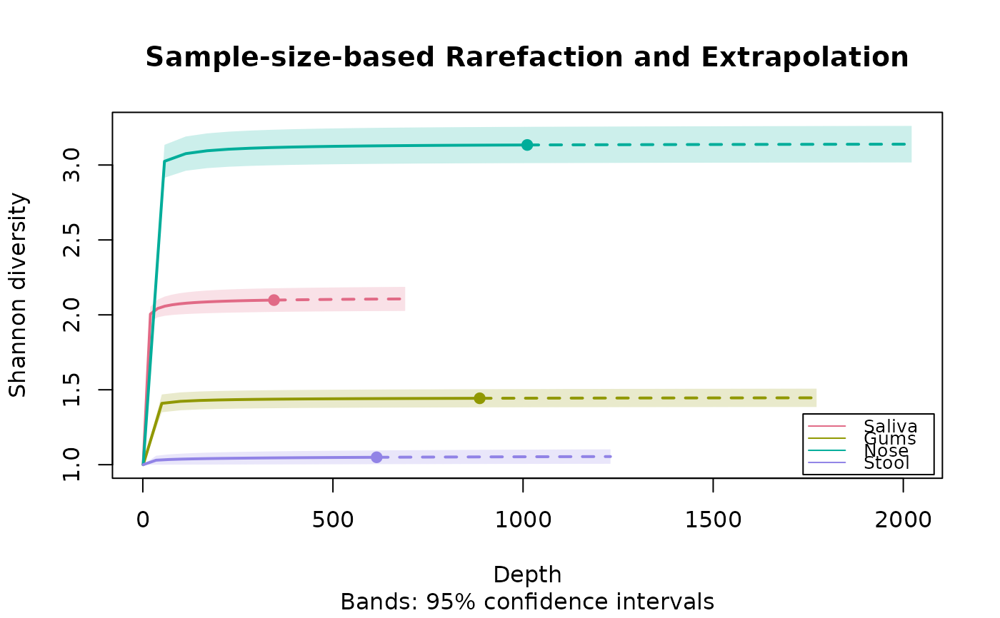
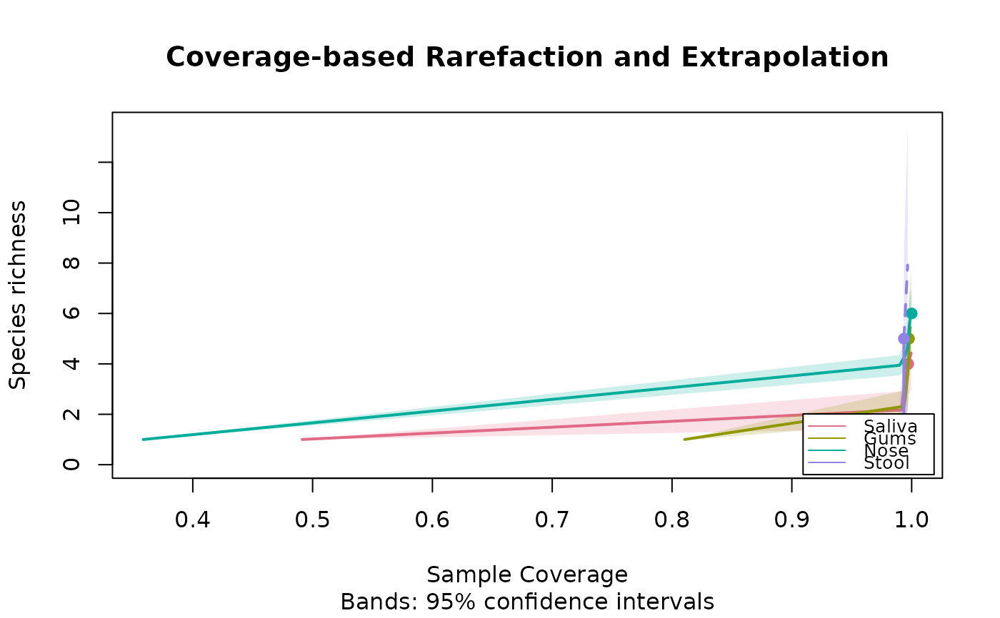

Diversity grows with sequencing depth, so samples of unequal depth can't
be compared directly. hill_extrapolation() gives each sample's Hill
numbers of order \(q = 0, 1, 2\) (richness, Shannon diversity and
Simpson diversity) at a range of depths, by rarefaction
(interpolation) below the sample's size and extrapolation above it,
with the sample coverage at each depth and the asymptotic
estimates (Chao et al. 2014), as iNEXT::iNEXT() does.
hill_standardize() gives the Hill numbers of every sample at one
common depth or, by default, one common coverage (as
iNEXT::estimateD()): values that can be compared, and tested with
alpha_test().
Usage
hill_extrapolation(
counts,
q = c(0, 1, 2),
depths = NULL,
max_depth = NULL,
n_depths = 40L,
n_boot = 50L,
conf_level = 0.95,
margin = 1L,
seed = 0L,
cpus = n_cpus()
)
hill_standardize(
counts,
q = c(0, 1, 2),
coverage = NULL,
depth = NULL,
n_boot = 50L,
conf_level = 0.95,
margin = 1L,
seed = 0L,
cpus = n_cpus()
)Arguments
- counts
A count table (samples \(\times\) features) of whole numbers; see Input Types. Each sample is one assemblage.
- q
The orders of the Hill numbers: any of
0(richness),1(Shannon diversity) and2(Simpson diversity). Default:c(0, 1, 2). Shannon diversity costs the most.- depths
The depths to compute the curves at, for every sample: whole numbers of at least 1. Each sample's own size is added. Default:
NULL,n_depthsdepths from 1 tomax_depth(see "The depths").- max_depth
The largest depth:
NULL(the default) for twice each sample's size, or a whole number for the same for all samples. Withdepths, larger depths are dropped.- n_depths
The number of depths in the default grid, a whole number of at least 2. Default:
40.- n_boot
The number of bootstrap replicates for the standard errors and intervals, a whole number;
0for none. Default:50.- conf_level
The confidence level of the intervals, between 0 and 1. Default:
0.95.- margin
The margin containing samples.
1if samples are rows,2if samples are columns. Ignored whencountsis a special object class (e.g.phyloseq). Default:1- seed
An integer seed for the bootstrap. Default:
0.- cpus
How many parallel processing threads should be used. The default,
n_cpus(), is the CPU cores this R process may use, within any limits set on it. Results are the same for anycpus.- coverage
The sample coverage to compare the samples at, a number in (0, 1]. At most one of
coverageanddepth; with neither, the smallest coverage among the samples extrapolated to twice their size (iNEXT's default forbase = "coverage"). A coverage of 1 gives the asymptotes.- depth
The depth (number of observations) to compare the samples at instead, a whole number of at least 1.
Value
hill_extrapolation(): a list of class ecodive_hill_extrapolation, of
four data frames, with attributes conf_level and n_boot:
size: the curves by depth (iNEXT'ssize_based), with columnssample,q,depth,method("rarefaction","observed"or"extrapolation"),estimate,lower,upper,coverage,coverage_lowerandcoverage_upper. Ordered by sample,qand depth.coverage: the same curves by coverage (iNEXT'scoverage_based): columnssample,q,coverage,depth,method,estimate,lowerandupper. Each row has asizerow's coverage, at the smallest depth that reaches it (coverage can be flat over a range of depths, which then gives one row); its interval is at that fixed coverage.asymptotic: columnssample,q,observed,estimate,se,lowerandupper(iNEXT'sAsyEst).info: columnssample,n(the size),s_obs(the richness),coverage(at the sample's size), andf1tof10, the numbers of features seen once to ten times (iNEXT'sDataInfo).
Without bootstrap (n_boot of 0 or 1), the interval and se columns are
NA. An empty sample has no rows in size and coverage, and NAs in
asymptotic and info (with a warning).
hill_standardize(): a numeric matrix with one row per sample and one
column per order (q0, q1, q2), of class ecodive_hill_standardize
(it prints a preview; unclass() gives the plain matrix), with
attributes:
lower,upper: matrices of the interval limits (only withn_boot > 1).depth,coverage: each sample's depth and coverage there (one of them is the common level; the depth can be fractional at a fixed coverage, andInfat coverage 1).method: each sample's"rarefaction","observed"or"extrapolation".levelandbase("coverage"or"depth"): what was held equal.conf_level.
Rarefaction, extrapolation and coverage
For a sample of \(n\) observations with \(f_k\) features seen \(k\) times:
Rarefaction to \(m < n\): the expected Hill number of a random subsample of \(m\) of the observations (Chao et al. 2014, Table 1): richness \(S_{obs} - \sum_i \binom{n - X_i}{m} / \binom{n}{m}\) (as
rarefaction_curve()), Shannon diversity from the expected frequency counts of the subsample, and Simpson diversity \(1 / [1/m + (m-1)/m \sum_i X_i (X_i - 1) / (n (n - 1))]\).Extrapolation to \(n + m^*\): richness \(S_{obs} + \hat f_0 [1 - (1 - f_1 / (n \hat f_0 + f_1))^{m^*}]\), with Chao1's \(\hat f_0\); Shannon diversity \(D_{obs} + (\hat D - D_{obs}) [1 - (1 - \hat\beta)^{m^*}]\) (Chao et al. 2023, Table 2), from the observed and asymptotic \(\hat D\), with \(\hat\beta = (D_{obs} - D(n - 1)) / (\hat D - D(n - 1))\), so that the curve passes through the rarefied value at \(n - 1\) (for richness, this \(\hat\beta\) is \(f_1 / (n \hat f_0 + f_1)\)); Simpson diversity as for rarefaction, with \(n + m^*\) for \(m\).
Sample coverage, the share of the community's individuals that belong to features seen in a sample of that depth (Chao & Jost 2012), by its rarefied and extrapolated estimates, with Chao et al.'s (2014, Eq. 12) estimate at \(n\).
Asymptotes, the estimates for a complete sample: Chao1 (bias corrected), \(\exp(\hat H)\), and \(n (n - 1) / \sum_i X_i (X_i - 1)\).
Between two whole depths (when a coverage level falls between them), every value is the straight line between its values at those depths, as in iNEXT.
Reliability: richness can be extrapolated reliably to about twice the
sample's size; Shannon and Simpson diversity, if the data aren't too
sparse, to their asymptotes (Chao et al. 2014). max_depth beyond twice
a sample's size is allowed, but read richness there with care.
Equal depth or equal coverage
Comparing samples at an equal depth says how diverse equally large
samples would be; comparing them at an equal coverage compares
equally complete samples, which Chao & Jost (2012) recommend: a more
diverse community needs more observations to reach the same coverage,
and comparing at equal depth understates its difference from a less
diverse one. hill_standardize() uses coverage unless you give
depth; its default coverage, the smallest among the samples
extrapolated to twice their size, is as far as every sample can be
extrapolated reliably.
Confidence intervals
With n_boot > 0, each estimate gets a bootstrap standard error and the
interval estimate \(\pm z_{(1 + \text{conf\_level})/2}\) SE (Chao et
al. 2014, Appendix G): n_boot times, a sample of the same size is drawn
from the estimated community (the observed features, with their
relative abundances adjusted for coverage, plus Chao1's undetected
ones), and every estimate is recomputed from it. At a fixed coverage,
each bootstrap sample's own depth for that coverage is used. Lower
limits stop at 0 (and the asymptotic richness's at the observed
richness), and coverage limits at 0 and 1, as in iNEXT.
Replicate \(b\) of sample \(i\) has its own random stream, from
seed, so the results are the same for any cpus. The cost grows with
n_boot + 1 and with the number of depths (n_depths): set n_boot = 0
for estimates alone.
Differences from iNEXT
The estimates equal iNEXT 3.0.2's to rounding, including Shannon diversity beyond the sample's size, which iNEXT 3 (and ecodive) take from Chao et al. (2023) rather than Chao et al.'s (2014) Eq. 10c.
The bootstrap draws from ecodive's own random streams, so standard errors and intervals agree with iNEXT's only within Monte Carlo error. The asymptotes' intervals use the same
n_bootreplicates as the curves; iNEXT's always use 100 (whatevernboot).Coverage-based depths are found exactly; iNEXT finds them by a numerical search, which leaves its depths (and its estimates there) off by about \(10^{-5}\). Where coverage is flat over a range of depths, ecodive takes the smallest, and gives one row; iNEXT's search lands anywhere in the range, and repeats the row.
With
depths, each sample's own size is added (iNEXT also adds \(n - 1\) and \(n + 1\)). Withn_depthsbelow 4, iNEXT's grid differs.Abundance data only, \(q \in \{0, 1, 2\}\), and the results' shapes (below).
hill_standardize()holds coverage equal by default;estimateD()holds depth equal (base = "size").
Same names in other packages
None. The same estimates: iNEXT::iNEXT(), iNEXT::estimateD(),
iNEXT::DataInfo(), iNEXT::ChaoRichness(), iNEXT::ChaoShannon() and
iNEXT::ChaoSimpson().
The depths
With depths = NULL, each sample of size \(n\) with endpoint \(M\)
(max_depth, else \(2n\)) gets iNEXT's grid of \(K\) = n_depths
knots: if \(M > n\), \(\lfloor K/2 \rfloor - 1\) depths evenly from 1
to \(n - 1\), then \(n\), then \(\lfloor K/2 \rfloor\) from \(n +
1\) to \(M\); else \(K\) from 1 to \(M\). Each is rounded down, and
duplicates dropped.
References
Chao, A., Gotelli, N. J., Hsieh, T. C., Sander, E. L., Ma, K. H., Colwell, R. K., & Ellison, A. M. (2014). Rarefaction and extrapolation with Hill numbers: a framework for sampling and estimation in species diversity studies. Ecological Monographs, 84, 45–67. doi:10.1890/13-0133.1
Chao, A., & Jost, L. (2012). Coverage-based rarefaction and extrapolation: standardizing samples by completeness rather than size. Ecology, 93, 2533–2547. doi:10.1890/11-1952.1
Chao, A., Wang, Y. T., & Jost, L. (2013). Entropy and the species accumulation curve: a novel entropy estimator via discovery rates of new species. Methods in Ecology and Evolution, 4, 1091–1100. doi:10.1111/2041-210X.12108
Hsieh, T. C., Ma, K. H., & Chao, A. (2016). iNEXT: an R package for rarefaction and extrapolation of species diversity (Hill numbers). Methods in Ecology and Evolution, 7, 1451–1456. doi:10.1111/2041-210X.12613
Chao, A., Thorn, S., Chiu, C.-H., Moyes, F., Hu, K.-H., Chazdon, R. L., Wu, J., Magnago, L. F. S., Dornelas, M., Zelený, D., Colwell, R. K., & Magurran, A. E. (2023). Rarefaction and extrapolation with beta diversity under a framework of Hill numbers: the iNEXT.beta3D standardization. Ecological Monographs, 93, e1588. doi:10.1002/ecm.1588
Chao, A. (1984). Nonparametric estimation of the number of classes in a population. Scandinavian Journal of Statistics, 11, 265–270.
Examples
# Richness, Shannon and Simpson diversity of each sample, by depth.
he <- hill_extrapolation(ex_counts, n_boot = 10)
he
#> Interpolated and extrapolated Hill numbers
#> 4 samples; q = 0, 1, 2; 480 depths by size; 95% intervals from 10 bootstrap replicates
#>
#> Asymptotic estimates:
#> sample q observed estimate lower upper
#> Saliva 0 4.000 4.499 4.000 6.043
#> Saliva 1 2.098 2.111 2.029 2.192
#> Saliva 2 2.029 2.036 2.004 2.067
#> Gums 0 5.000 5.999 5.000 7.947
#> Gums 1 1.443 1.448 1.387 1.509
#> Gums 2 1.233 1.234 1.187 1.281
#> Nose 0 6.000 6.000 6.000 6.930
#> Nose 1 3.134 3.142 3.019 3.264
#> Nose 2 2.784 2.789 2.694 2.883
#> # ... 3 more rows
#>
#> Tables: $size, $coverage, $asymptotic, $info
head(he$asymptotic)
#> sample q observed estimate se lower upper
#> 1 Saliva 0 4.000000 4.498551 0.78795342 4.000000 6.042911
#> 2 Saliva 1 2.098450 2.110524 0.04163798 2.028915 2.192133
#> 3 Saliva 2 2.029446 2.035538 0.01626357 2.003662 2.067414
#> 4 Gums 0 5.000000 5.998871 0.99407587 5.000000 7.947224
#> 5 Gums 1 1.443173 1.447902 0.03132735 1.386502 1.509303
#> 6 Gums 2 1.233425 1.233750 0.02395071 1.186808 1.280693
plot(he, q = 1)

plot(he, type = 'coverage')

# Every sample at an equal coverage, then at an equal depth.
hill_standardize(ex_counts, n_boot = 10)
#> # A matrix: 4 samples × 3 orders
#> # Hill numbers at coverage 0.9967
#> q0 q1 q2
#> Saliva 3.92 2.1 2.03
#> Gums 3.61 1.44 1.23
#> Nose 4.72 3.1 2.76
#> Stool 7.92 1.05 1.01
#> # Attributes: lower, upper, depth, coverage, method, level, base, conf_level
hill_standardize(ex_counts, depth = 1000, n_boot = 0)
#> # A matrix: 4 samples × 3 orders
#> # Hill numbers at depth 1000
#> q0 q1 q2
#> Saliva 4.49 2.11 2.03
#> Gums 5.23 1.44 1.23
#> Nose 6 3.13 2.78
#> Stool 7.05 1.05 1.01
#> # Attributes: depth, coverage, method, level, base, conf_level